Simple and Bipartite Stochastic Block Models
An illustration on antagonistic tree/fungus network
team großBM
2024-02-06
Source:vignettes/SBM_fungus_tree_network.Rmd
SBM_fungus_tree_network.RmdPreliminaries
This vignette illustrates the use of the estimateSBM
function and the methods accompanying the R6 classes
SimpleSBMfit and BipartiteSBMfit.
Requirements
The packages required for the analysis are sbm plus some others for data manipulation and representation:
Data set: antagonistic tree/fungus interaction network
We consider the fungus-tree interaction network studied by Vacher, Piou, and Desprez-Loustau (2008), available with the package sbm:
data("fungusTreeNetwork")
str(fungusTreeNetwork, max.level = 1)
#> List of 5
#> $ tree_names : Factor w/ 51 levels "Abies alba","Abies grandis",..: 1 2 3 14 42 4 5 6 7 8 ...
#> $ fungus_names: Factor w/ 154 levels "Amphiporthe leiphaemia",..: 1 2 3 4 5 6 7 8 9 10 ...
#> $ tree_tree : num [1:51, 1:51] 0 12 9 3 2 2 0 0 2 7 ...
#> $ fungus_tree : int [1:154, 1:51] 0 0 0 0 1 1 1 0 0 0 ...
#> $ covar_tree :List of 3This data set provides information about \(154\) fungi sampled on \(51\) tree species. It is a list with the following entries:
-
fungi_list: list of the fungus species names -
tree_list: list of the tree species names -
fungus_tree: binary fungus-tree interactions -
tree_tree: weighted tree-tree interactions (number of common fungal species two tree species host) -
covar_tree: covariates associated to pairs of trees (namely genetic, taxonomic and geographic distances)
We first consider the tree-tree interactions resulting into a Simple Network. Then we consider the bipartite network between trees and fungi.
Mathematical Background
See Leger (2016) for details.
Analysis of the tree/tree data
Tree-tree binary interaction networks
We first consider the binary network where an edge is drawn between two trees when they do share a least one common fungi:
tree_tree_binary <- 1 * (fungusTreeNetwork$tree_tree != 0)The simple function plotMyMatrix can be use to represent
simple or bipartite SBM:
plotMyMatrix(tree_tree_binary, dimLabels =c('tree'))
We look for some latent structure of the network by adjusting a
simple SBM with the function estimateSimpleSBM.
mySimpleSBM <- tree_tree_binary %>%
estimateSimpleSBM("bernoulli", dimLabels = 'tree', estimOptions = list(verbosity = 1, plot = TRUE))
#> -> Estimation for 1 groups
#> 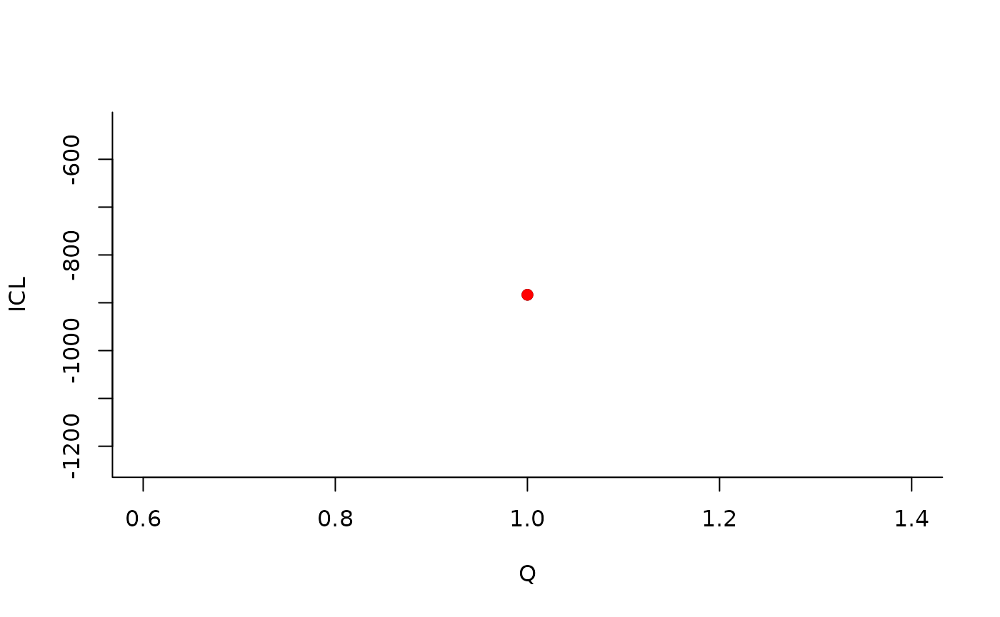
#> -> Computation of eigen decomposition used for initalizations
#>
#> -> Pass 1
#> 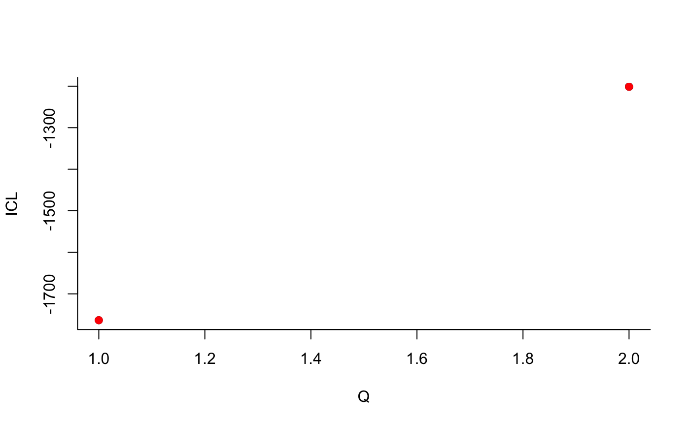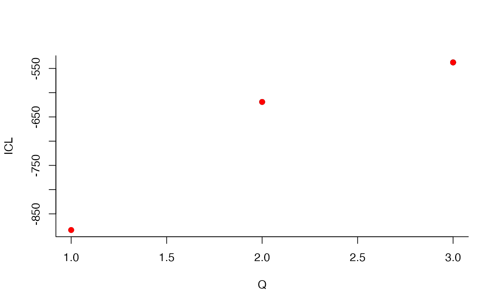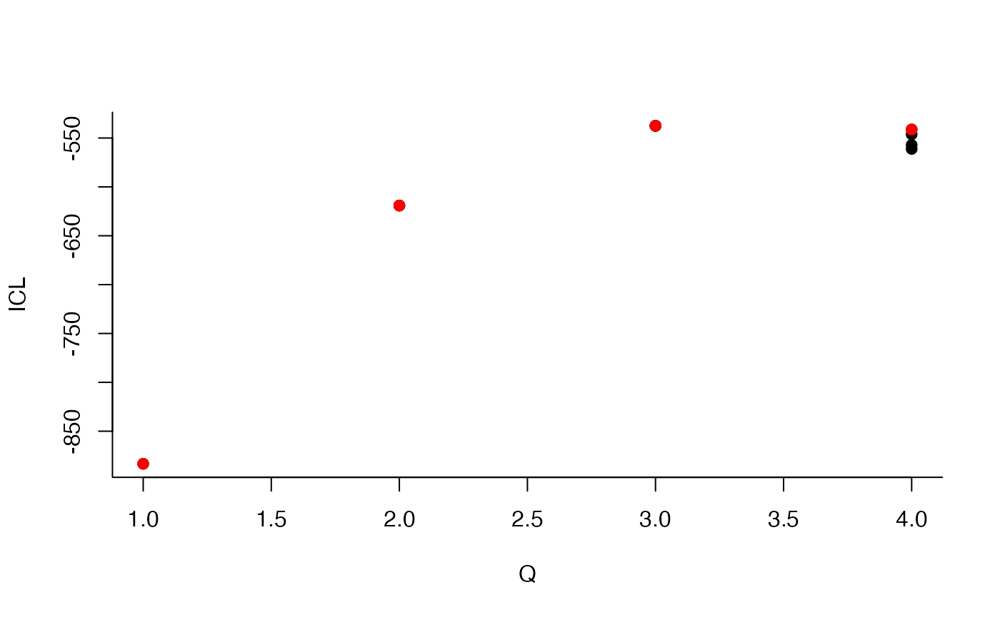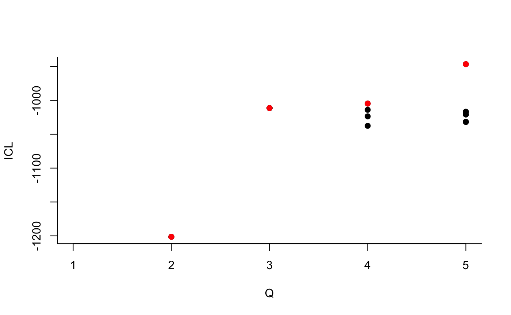 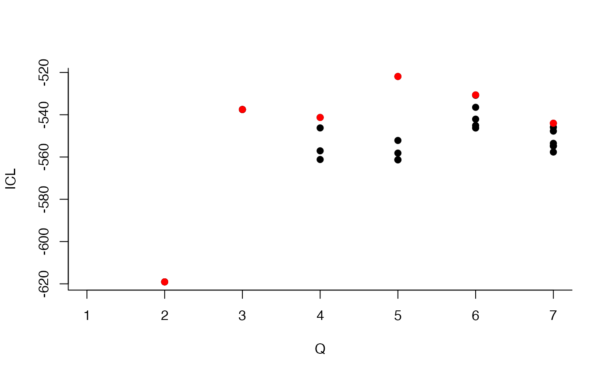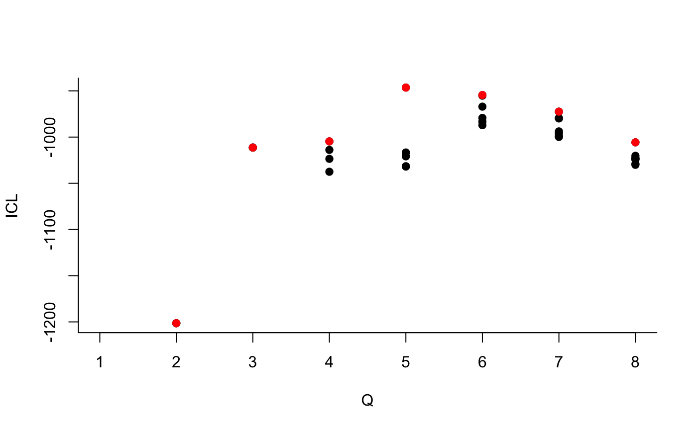
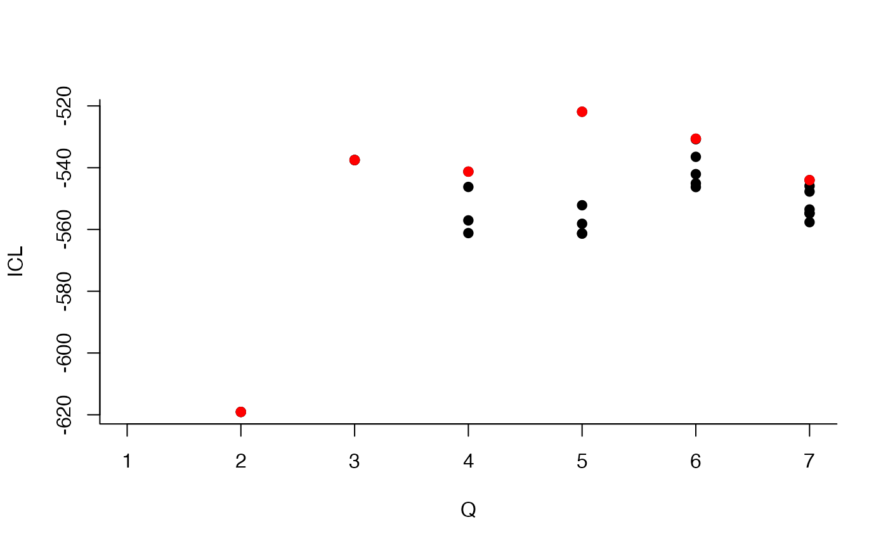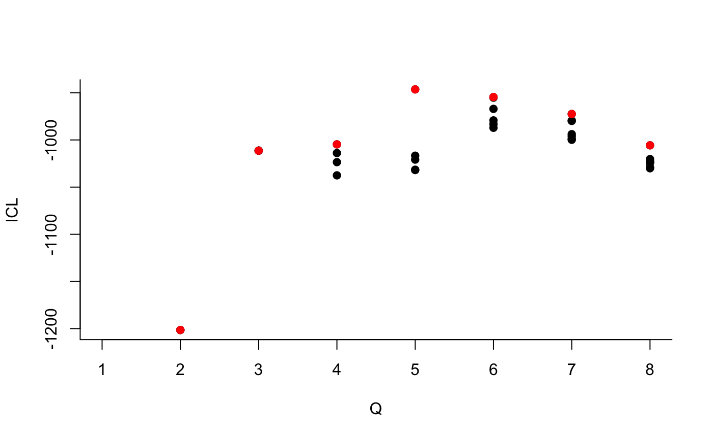
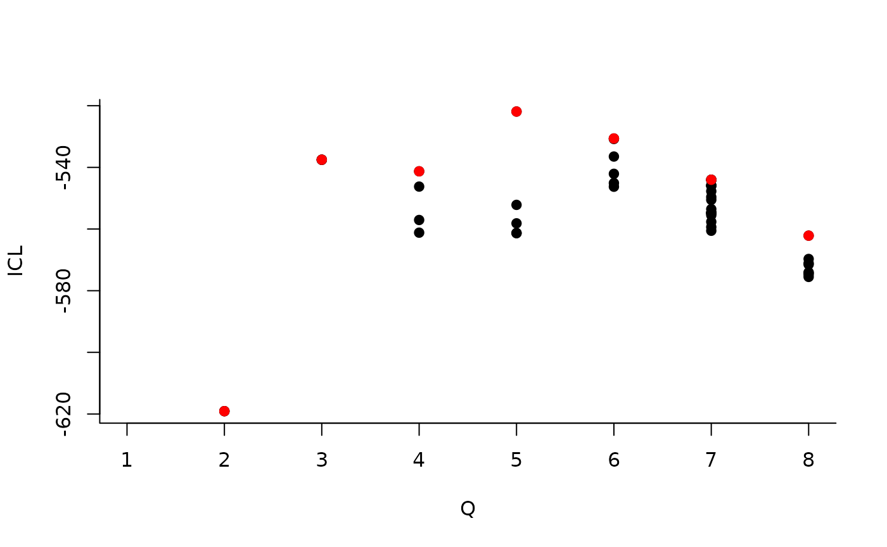
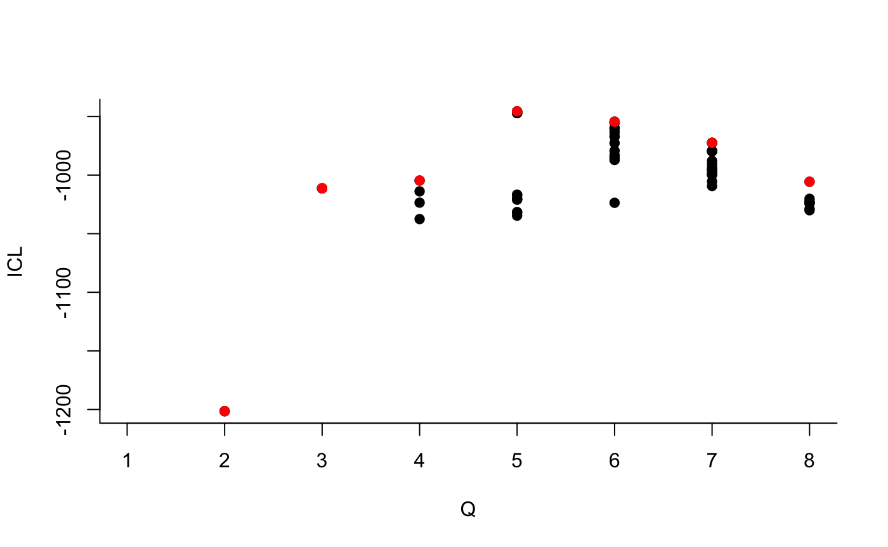
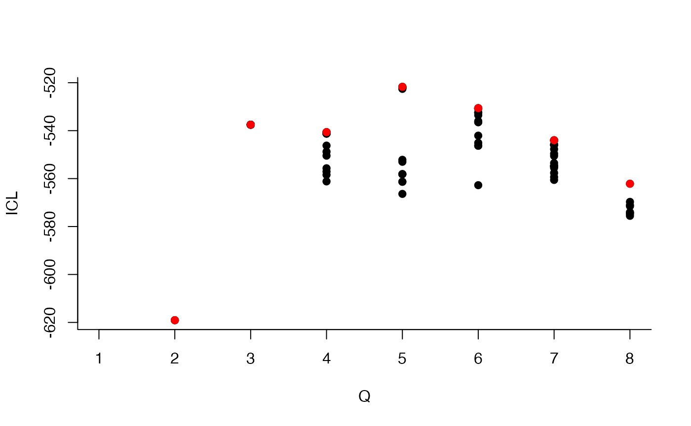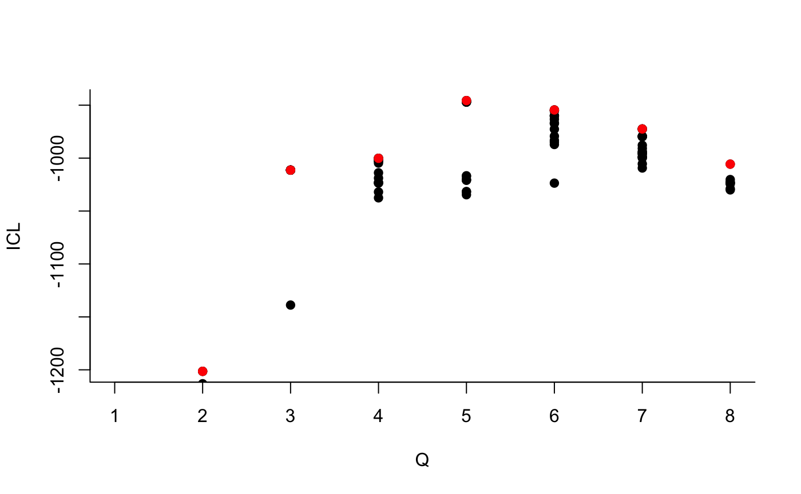
#> -> Pass 2
#> 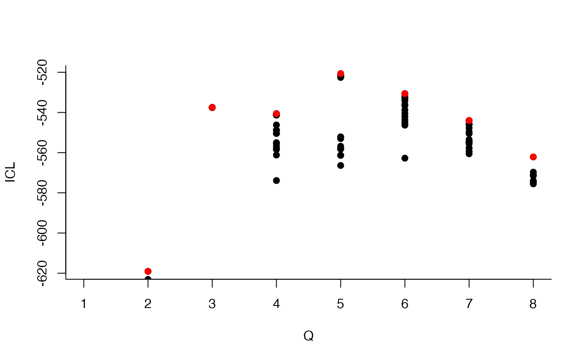
#> -> Pass 3Once fitted, the user can manipulate the fitted model by accessing
the various fields and methods enjoyed by the class
simpleSBMfit. Most important fields and methods are
recalled to the user via the show method:
class(mySimpleSBM)
#> [1] "SimpleSBM_fit" "SimpleSBM" "SBM" "R6"
mySimpleSBM
#> Fit of a Simple Stochastic Block Model -- bernoulli variant
#> =====================================================================
#> Dimension = ( 51 ) - ( 5 ) blocks and no covariate(s).
#> =====================================================================
#> * Useful fields
#> $nbNodes, $modelName, $dimLabels, $nbBlocks, $nbCovariates, $nbDyads
#> $blockProp, $connectParam, $covarParam, $covarList, $covarEffect
#> $expectation, $indMemberships, $memberships
#> * R6 and S3 methods
#> $rNetwork, $rMemberships, $rEdges, plot, print, coef
#> * Additional fields
#> $probMemberships, $loglik, $ICL, $storedModels,
#> * Additional methods
#> predict, fitted, $setModel, $reorderFor instance,
mySimpleSBM$nbBlocks
#> [1] 5
mySimpleSBM$nbNodes
#> tree
#> 51
mySimpleSBM$nbCovariates
#> [1] 0The plot method is available as a S3 or R6 method. The default represents the network data reordered according to the memberships estimated in the SBM.

One can also plot the expected network which, in case of the Bernoulli model, corresponds to the probability of connection between any pair of nodes in the network.
plot(mySimpleSBM, type = "expected")
plot(mySimpleSBM, type = "meso")
coef(mySimpleSBM, 'block')
#> [1] 0.3320954 0.1766383 0.1378665 0.1766999 0.1766999
coef(mySimpleSBM, 'connectivity')
#> $mean
#> [,1] [,2] [,3] [,4] [,5]
#> [1,] 0.98230909 0.9828930 0.92749023 0.60851311 0.05994511
#> [2,] 0.98289303 0.9937459 0.29390960 0.91904879 0.22617761
#> [3,] 0.92749023 0.2939096 0.79890626 0.05802394 0.02169247
#> [4,] 0.60851311 0.9190488 0.05802394 0.47209785 0.06626655
#> [5,] 0.05994511 0.2261776 0.02169247 0.06626655 0.02899357About model selection and choice of the number of blocks
During the estimation, a certain range of models are explored
corresponding to different number of blocks. By default, the best model
in terms of Integrated Classification Likelihood is sent back. In fact,
all the model are stored internally. The user can have a quick glance at
them via the $storedModels field:
| indexModel | nbParams | nbBlocks | ICL | loglik |
|---|---|---|---|---|
| 1 | 1 | 1 | -883.3334 | -879.7581 |
| 2 | 4 | 2 | -619.0799 | -606.3880 |
| 3 | 8 | 3 | -537.5179 | -512.1339 |
| 4 | 13 | 4 | -540.6318 | -498.9806 |
| 5 | 19 | 5 | -520.6645 | -459.1706 |
| 6 | 26 | 6 | -530.6278 | -445.7159 |
| 7 | 34 | 7 | -544.0191 | -432.1138 |
| 8 | 43 | 8 | -562.1450 | -419.6710 |
We can then see what models are competitive in terms of model selection by checking the ICL:
mySimpleSBM$storedModels %>% ggplot() + aes(x = nbBlocks, y = ICL) + geom_line() + geom_point(alpha = 0.5)
The 4-block model could have been a good choice too, in place of the
5-block model. The user can update the current simpleSBMfit
thanks to the the setModel method:
mySimpleSBM$setModel(4)
mySimpleSBM$nbBlocks
#> [1] 4
mySimpleSBM$plot(type = 'expected')
mySimpleSBM$setModel(5)Analysis of the weighted interaction network
Instead of considering the binary network tree-tree we may consider the weighted network where the link between two trees is the number of fungi they share.
We plot the matrix with function plotMyMatrix:
tree_tree <- fungusTreeNetwork$tree_tree
plotMyMatrix(tree_tree, dimLabels = c('tree'))
Here again, we look for some latent structure of the network by
adjusting a simple SBM with the function estimateSimpleSBM,
considering a Poisson distribution on the edges.
mySimpleSBMPoisson <- tree_tree %>%
estimateSimpleSBM("poisson", dimLabels = 'tree', estimOptions = list(verbosity = 0, plot = FALSE))Once fitted, the user can manipulate the fitted model by accessing
the various fields and methods enjoyed by the class
simpleSBMfit. Most important fields and methods are
recalled to the user via the show method:
class(mySimpleSBMPoisson)
#> [1] "SimpleSBM_fit" "SimpleSBM" "SBM" "R6"
mySimpleSBMPoisson
#> Fit of a Simple Stochastic Block Model -- poisson variant
#> =====================================================================
#> Dimension = ( 51 ) - ( 6 ) blocks and no covariate(s).
#> =====================================================================
#> * Useful fields
#> $nbNodes, $modelName, $dimLabels, $nbBlocks, $nbCovariates, $nbDyads
#> $blockProp, $connectParam, $covarParam, $covarList, $covarEffect
#> $expectation, $indMemberships, $memberships
#> * R6 and S3 methods
#> $rNetwork, $rMemberships, $rEdges, plot, print, coef
#> * Additional fields
#> $probMemberships, $loglik, $ICL, $storedModels,
#> * Additional methods
#> predict, fitted, $setModel, $reorderFor instance,
mySimpleSBMPoisson$nbBlocks
#> [1] 6
mySimpleSBMPoisson$nbNodes
#> tree
#> 51
mySimpleSBMPoisson$nbCovariates
#> [1] 0We now plot the matrix reordered according to the memberships estimated in the SBM:

One can also plot the expected network which, in case of the Poisson model, corresponds to the expectation of connection between any pair of nodes in the network.

plot(mySimpleSBMPoisson, type = "meso")
The same manipulations can be made on the models as before.
coef(mySimpleSBMPoisson, 'block')
#> [1] 0.1763561 0.1957351 0.1375982 0.1569772 0.1569772 0.1763561
coef(mySimpleSBMPoisson, 'connectivity')
#> $mean
#> [,1] [,2] [,3] [,4] [,5] [,6]
#> [1,] 9.0286270 3.2910355 6.04727443 1.06850270 1.85464212 0.11062572
#> [2,] 3.2910355 5.9646020 1.33637565 2.17610068 0.49999123 0.26547703
#> [3,] 6.0472744 1.3363757 3.94065914 0.40263458 1.46245649 0.07080814
#> [4,] 1.0685027 2.1761007 0.40263458 0.82166374 0.14089332 0.07793391
#> [5,] 1.8546421 0.4999912 1.46245649 0.14089332 0.54121406 0.02263218
#> [6,] 0.1106257 0.2654770 0.07080814 0.07793391 0.02263218 0.02940543Introduction of covariates
We have on each pair of trees 3 covariates, namely the genetic distance, the taxonomic distance and the geographic distance. Each covariate has to be introduced as a matrix: \(X^k_{ij}\) corresponds to the value of the \(k\)-th covariate describing the couple \((i,j)\).
mySimpleSBMCov<-
tree_tree %>%
estimateSimpleSBM(
model = 'poisson',
directed = FALSE,
dimLabels = 'tree',
covariates = fungusTreeNetwork$covar_tree,
estimOptions = list(verbosity = 0, plot = FALSE, nbCores = 2)
)- We select the best number of clusters (with respect to the ICL criteria)
mySimpleSBMCov$nbBlocks
#> [1] 4- We can now extract the parameters of interest, namely (\(\lambda\), \(\pi\)) and the clustering of the nodes.
mySimpleSBMCov$connectParam
#> $mean
#> [,1] [,2] [,3] [,4]
#> [1,] 28.184661 14.8837525 5.9576476 1.2386211
#> [2,] 14.883753 9.5567197 3.7908857 0.4100245
#> [3,] 5.957648 3.7908857 1.6177904 0.3840582
#> [4,] 1.238621 0.4100245 0.3840582 0.1892473
mySimpleSBMCov$blockProp
#> [1] 0.3715916 0.2159544 0.2354120 0.1770421
mySimpleSBMCov$memberships
#> [1] 1 1 2 1 2 2 4 4 2 1 3 1 1 1 1 2 1 2 3 3 2 1 2 1 3 3 2 1 3 2 3 1 4 1 1 3 1 3
#> [39] 4 1 1 3 2 4 4 1 4 4 3 3 4
mySimpleSBMCov$covarParam
#> [,1]
#> [1,] 0.1977418
#> [2,] -2.0548142
#> [3,] -0.3579126
coef(mySimpleSBMCov, 'covariates')
#> [,1]
#> [1,] 0.1977418
#> [2,] -2.0548142
#> [3,] -0.3579126S3 methods are also available for fit and prediction (results hidden here)
#fitted(mySimpleSBMCov)
#predict(mySimpleSBMCov)
#predict(mySimpleSBMCov, fungusTreeNetwork$covar_tree)Analysis of the tree/fungi data
We now analyze the bipartite tree/fungi interactions. The incidence matrix can be plotted with the function
plotMyMatrix(fungusTreeNetwork$fungus_tree, dimLabels = c(row = 'fungis', col= 'tree'))
myBipartiteSBM <-
fungusTreeNetwork$fungus_tree %>%
estimateBipartiteSBM(model = 'bernoulli', dimLabels = c('fungis', 'tree'),estimOptions = list(verbosity = 0, plot = FALSE))
myBipartiteSBM$nbNodes
#> fungis tree
#> 154 51
myBipartiteSBM$nbBlocks
#> fungis tree
#> 4 4
myBipartiteSBM$connectParam
#> $mean
#> [,1] [,2] [,3] [,4]
#> [1,] 0.96813478 0.077538579 0.840370657 0.067563355
#> [2,] 0.52055882 0.584398216 0.230893917 0.107930384
#> [3,] 0.32450427 0.003624764 0.098526840 0.005780612
#> [4,] 0.01834547 0.154334411 0.001330278 0.019219920
coef(myBipartiteSBM, 'block')
#> $row
#> [1] 0.02655516 0.05570334 0.31666508 0.60107642
#>
#> $col
#> [1] 0.1050494 0.1963968 0.2477304 0.4508234
coef(myBipartiteSBM, 'connectivity')
#> $mean
#> [,1] [,2] [,3] [,4]
#> [1,] 0.96813478 0.077538579 0.840370657 0.067563355
#> [2,] 0.52055882 0.584398216 0.230893917 0.107930384
#> [3,] 0.32450427 0.003624764 0.098526840 0.005780612
#> [4,] 0.01834547 0.154334411 0.001330278 0.019219920We can now plot the reorganized matrix.

plot(myBipartiteSBM, type = 'meso',
dimLabels = list(row = 'fungis', col= 'tree'),
plotOptions = list(edge.width = 1, vertex.size = c(1,2)))